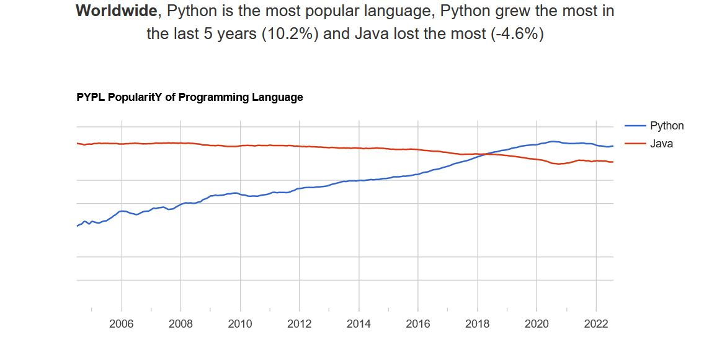
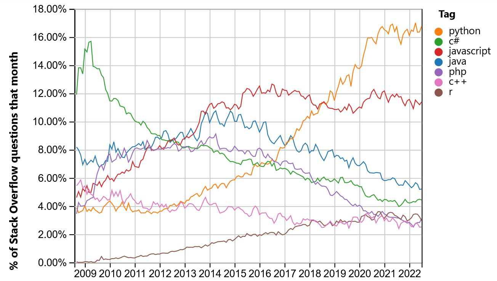
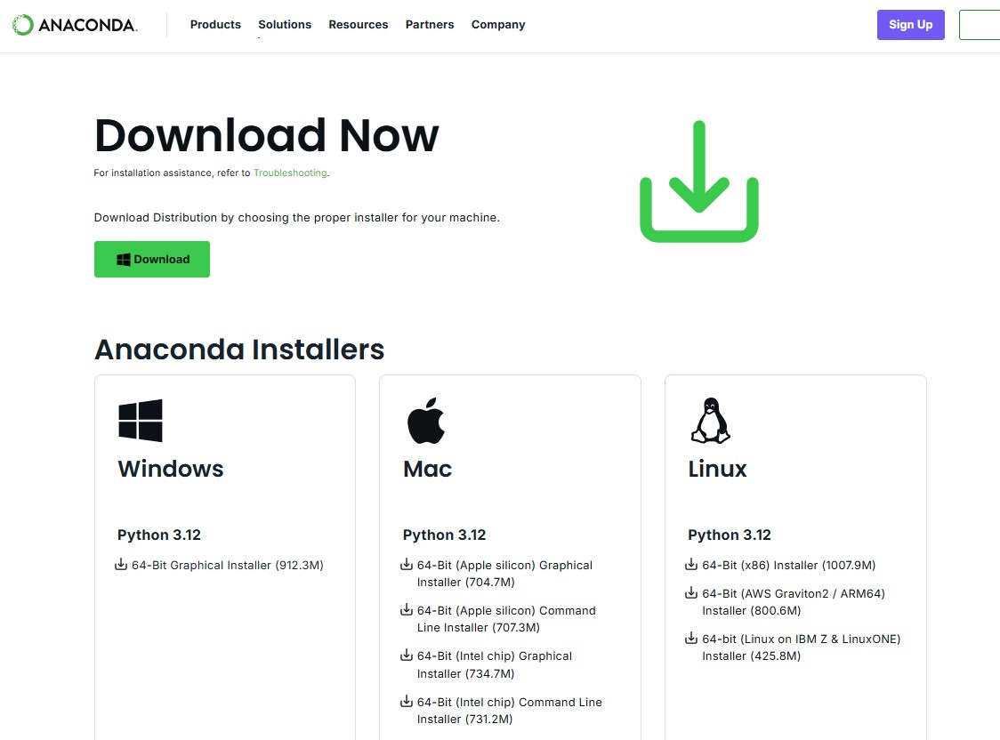
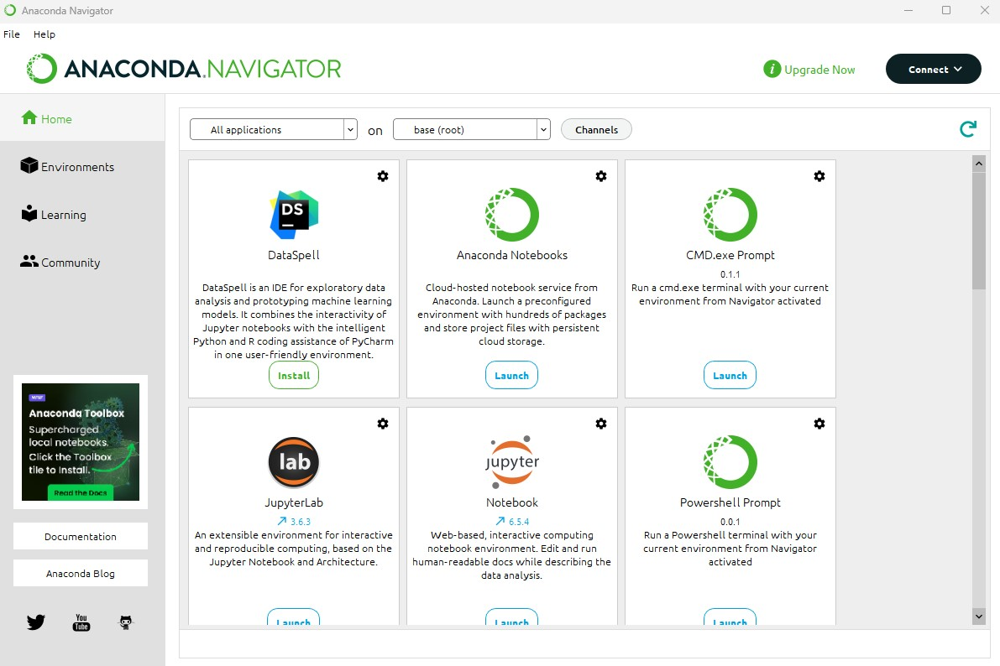

import numpy2 Primeiros passos no Python
In summary, this book has no content whatsoever.
2.1 O Python
Python foi criado no final dos anos oitenta(1989) por Guido van Rossum no Centro de Matemática e Tecnológia da Informação (CWI, Centrum Wiskunde e Informatica), na Holanda, como sucessor da linguagem de programação ABC, capaz de lidar com exceções e interagir com o sistema operacional Amoeba. O nome da língua vem do gosto de seu criador pelos humoristas britânicos Monty Python (fonte: https://blog.vulpi.com.br/python-como-surgiu/)
Python é uma linguagem de programação de alto-nível, interpretada, multi-paradigma, e que usa tipagem dinâmica e forte.
bla bla bla
2.1.1 Porque escolher
Assim como tudo na vida, o Python é uma linguagem de programação com muitas qualidades mas que também possui seus defeitos (em geral ligados à velocidade de execução dos programas). Em sendo uma linguagem de alto nível, é uma linguagem bastante indicada, por exemplo, para aplicações que demandam replicabilidade, dada a facilidade de escrever e interpretar o código. Por outro lado, aplicações que demandam uma interação mais eficiente entre o código e o gerenciamento de memória da máquina, por exemplo, podem se beneficiar de outras linguagens.
No entanto, o conjunto de qualidades do Python e as inúmeras bibliotecas que foram desenvolvidas nos últimos anos parecem ter mais do que compensado as falhas da linguagem. Hoje o Python é uma das principais linguagens de programação (senão a principal) quando o assunto é ciência dos dados e aprendizado de máquina (data science e machine learning, respectivamente). É também uma das principais linguagens de programação por trás de vários dos sistemas de grandes empresas, como Uber, GoldmanSachs, Netflix e Google (fonte: link).
Por todos esses fatores, Python é uma das linguagens com a comunidade mais ativa em fóruns online voltados à programação e é a linguagem que mais cresce no mundo. As figuras abaixo ilustram bem esse crescimento da linguagem nos últimos anos:
 
2.1.2 Como instalar
Existe mais de uma forma de instalar o Python no seu sistema e ainda mais formas de interagir com a linguagem. Você pode baixar o Python puro (https://www.python.org/downloads/) e instalá-lo diretamente em sua máquina, porém, essa distribuição vem com poucos pacotes já instalados e instalá-los um a um requer paciência. Além disso, a instalação do Python puro pode demandar algumas alterações em configurações do sistema via prompt de comando do Windows, por exemplo, para que seja possível dialogar com a linguagem.

Uma forma mais simples de instalar o Python em seu computador é através da distribuição Anaconda (https://www.anaconda.com/). Além de ser gratuita e conter vários dos pacotes que iremos utilizar, ela nos fornece diversas ferramentas que facilitam nossa interação com a linguagem. É hoje uma das distribuições do Python mais populares no mundo! Recomendo fortemente utilizar esse caminho.
O passo a passo a seguir foi feito para o sistema Windows 10. Embora o caminho seja parecido, podem haver algumas divergências em relação ao passo a passo para sistemas Linux e MacOS.
- Baixar e instalar o Anaconda é fácil. Basta acessar a aba de downloads no site do Anaconda (https://www.anaconda.com/download), fornecer um email para cadastro e baixar o arquivo executável necessário para a instalação a depender do seu sistema operacional.

- Depois de baixado, basta clicar duas vezes sobre o arquivo e ir acompanhando o instalador, mantendo sempre as opções padrão e escolhendo a opção de instalar para todos os usuários do computador, o que requer acesso de administrador.

- Pronto, o Anaconda está instalado e os principais pacotes e programas que utilizaremos também!
2.1.3 Anaconda e suas particularidades
Como dito acima, anaconda é uma distribuição do Python para computação científica (e.g, ciência de dados e aprendizado de máquina), que visa simplificar o gerenciamento e a implantação de pacotes. As versões de pacotes no Anaconda são gerenciadas pelo sistema de gerenciamento de pacotes conda. Através do conda é possível criar ambientes e instalar pacotes distintos de forma a evitar incompatibilidades entre versões de pacotes já instalados.
Além disso, o anaconda traz consigo o Anaconda Navigator, um ambiente user-friendly para a gestão de pacotes e aplicativos necessários para a utilização do Python sem que seja preciso ter qualquer conhecimento acerca da utilização correta de terminais (e.g, prompt de comando do Windows). Ao abrir o Anaconda Navigator no Windows, você deve ver algo assim

É possível instalar pacotes e fazer muito mais coisa diretamente pelo Anaconda Navigator. Para os que tiverem interesse em saber um pouco mais, esse vídeo é um bom começo.
2.1.4 IDEs
IDE é um acrônimo para Integrated Development Environment, em português, Ambiente de Desenvolvimento Integrado. Ele é um programa que reúne ferramentas necessárias para a construção de outros softwares. A utilização de um IDE ajuda muito os programadores e empresas, pois torna mais rápido o desenvolvimento de aplicações, aumentando a produtividade e reduzindo custos. Existem IDE’s específicas para plataformas, e outras que são mais flexíveis. As mais famosas são o Sublime Text e o Visual Studio Code.
Quais são os componentes típicos de uma IDE?
Editor de código-fonte: Permite edição do código nas linguagens de programação suportadas pelo IDE.
Preenchimento inteligente: Esse é um recurso trazido pelos IDEs que agiliza o desenvolvimento, pois escreve automaticamente trechos do código como, por exemplo, comandos de função.
Compilador: O compilador que você escreveu em uma determinada linguagem de programação para a linguagem de máquina, de modo que os computadores o entendam.
Debugger: É outra ferramenta que contribui para no código-fonte, melhorando o desempenho do programa.
Geração de código: Com esse recurso, é possível predefinir trechos de códigos para serem usados de modelo em outros projetos, agilizando o desenvolvimento de trabalhos futuros.
Como podemos ver, os IDEs reúnem diversas ferramentas que tornam mais simples a vida dos programadores. Dentre todos os benefícios que a utilização desses programas pode trazer para seus projetos, podemos citar alguns:
- Reduz o tempo gasto em cada aplicação;
- Permite o desenvolvimento de um código mais limpo, organizado e legível;
- Aumenta a produtividade dos desenvolvedores e das empresas;
- Reduz a quantidade de bugs e falhas no código-fonte;
- Reúne diversas ferramentas em um só lugar.
2.1.4.1 Spyder
O Spyder é uma ferramenta leve, simples e ao mesmo tempo poderosa. É um IDE Python de código aberto que conta com elementos avançados de edição, depuração e testes interativos. Ele é bastante utilizado para o aprendizado de Data Science, apesar de não fornecer ferramentas tão avançadas nesse sentido como outras disponíveis. Mas ele é prático e seu depurador destaca bem funções, variáveis e erros. Conta também com um recurso de exploração de variáveis, que exibe os conteúdos armazenados dentro de cada uma. Isso poupa a escrita de comandos de impressão de variáveis na tela.
Disponível com a instalação do Anaconda, uma das maiores e mais utilizadas plataformas de distribuição do Python.
2.1.4.2 Jupyter
É um IDE Python gratuito, utilizado principalmente na análise e ciência de dados. Ele é fácil e intuitivo, proporcionando um bom ambiente para iniciantes em Python. Também conta com muitos materiais de referência, tornando-se um dos IDEs mais utilizados pela comunidade. Ele trabalha muito bem com grandes conjuntos de dados. Além disso, é ótimo para a estética do código e atua como uma. É possível visualizar e editar facilmente seu código para deixá-lo mais atraente e apresentável.
Além de tudo isso, a estrutura do Jupyter serve muito ao propósito de tornar o código mais facilmente replicável, já que é possível intercalar células de comentários e explicações em linguagem Markdown com células de código propriamente dito, seguidas do resultado (ou erros) das instruções. Ele possui ainda integrações com HTML, por exemplo, que fazem a diferença principalmente na hora de apresentar projetos ou utilizá-los para o aprendizado. O material aula a aula do nosso curso, por exemplo, foi inteiramente desenvolvido e criado no Jupyter!
2.1.4.3 Google Colaboratory
O Google Colaboratory, carinhosamente chamado de Colab, é um serviço de nuvem gratuito hospedado pelo próprio Google para incentivar a pesquisa de Aprendizado de Máquina e Inteligência Artificial.
É uma ferramenta que permite que você misture código fonte (geralmente em python) e texto rico (geralmente em markdown) com imagens e o resultado desse código, assim como o próprio Jupyter e sua estrutura de notebooks (“cadernos” em inglês). Uma diferença importante é que no caso do Colab os recursos computacionais utilizados para a execução do código são os da Google e não do seu computador. Apesar da versão gratuita disponibilizar apenas algo como 12GB de RAM, é possível ampliar essa capacidade de processamento da máquina virtual por uma conta paga que começa em $5 mensais.
2.1.5 Spyder X Jupyter
Alguns dos pacotes mais utilizados no Python hoje em dia, como Pandas e Matplotlib, já vem instalados com o Anaconda, o que não é verdade na distribuição pura do Python. Além disso, alguns dos programas mais utilizados para interagir com a linguagem, como o Spyder e o Jupyter Notebook também. Tanto o Spyder quanto o Jupyter são ótimas IDEs para trabalhar com o Python, embora cada um tenha suas particularidades.
Existem vários comparativos entre essas duas formas (e tantas outras) de trabalhar com o Python (1, 2 e 3), mas no nosso caso talvez seja mais produtivo se formos direto para ambos os programas!
Acabamos de ver que uma das diferenças mais relevantes para nós, iniciantes na linguagem, ao usar o Spyder ou o Jupyter é a dificuldade, no segundo caso, de fazer uma gestão mais direta das variáveis criadas e da memória utilizada por cada uma delas. É possível, no entanto, superar essa dificuldade através de uma biblioteca que pode ser bastante útil para nós, o nbextensions (documentação aqui e aqui).
Vamos primeiro instalar essa biblioteca e mais uma outra biblioteca auxiliar que nos permitirá ter um controle maior sobre as extensões. Rode os comandos abaixo no Anaconda Prompt
pip install jupyter_contrib_nbextensionspip install jupyter_nbextensions_configurator
Note que uma nova aba Nbextensions foi criada na “Home Page” do Jupyter Notebook. Ali é possível ativar e desativar as extensões que possam ser interessante ao nosso propósito. Agora já podemos brincar um pouco com tudo que ela pode nos fornecer!
2.2 Construindo o primeiro programa
Tradicionalmente, o primeiro programa que se escreve em uma nova linguagem chama-se “Hello, World!”, porque tudo o que faz é exibir as palavras “Hello, World!” na tela. No Python, ele se parece com isto:
print('Hello, World!')Este é um exemplo de uma instrução print (instrução de impressão), embora na realidade ela não imprima nada em papel. Ela exibe um resultado na tela. As aspas apenas marcam o começo e o fim do texto a ser exibido; elas não aparecem no resultado. Os parênteses indicam que o print é uma função. No Python 2, a instrução print é ligeiramente diferente; ela não é uma função, portanto não usa parênteses.
2.2.1 Operadores aritméticos
Depois do “Hello, World”, o próximo passo é a aritmética. O Python tem operadores, que são símbolos especiais representando operações de computação, como adição e multiplicação. Os operadores +, - e * executam a adição, a subtração e a multiplicação, Finalmente, o operador ** executa a exponenciação; isto é, eleva um número a uma potência, como nos seguintes exemplos:
40 + 243 - 16 * 784 / 26 ** 2 + 6Em algumas outras linguagens, o ^ é usado para a exponenciação, mas no Python é um operador bitwise, chamado XOR. Se não tiver familiaridade com operadores bitwise, o resultado o surpreenderá. Não abordaremos operadores bitwise neste curso, mas você pode ler sobre eles em http://wiki.python.org/moin/BitwiseOperators.
6 ^ 2Um valor é uma das coisas básicas com as quais um programa trabalha, como uma letra ou um número. Alguns valores que vimos até agora foram 2, 42.0 e ‘Hello, World!’.
Esses valores pertencem a tipos diferentes: 2 é um número inteiro, 42.0 é um número de ponto flutuante e ‘Hello, World!’ é uma string, assim chamada porque as letras que contém estão em uma sequência em cadeia.
Se não tiver certeza sobre qual é o tipo de certo valor, o interpretador pode dizer isso a você:
type(2)type(42.0)type('Hello World')Nesses resultados, a palavra “class” (classe) é usada no sentido de categoria; um tipo é uma categoria de valores. Como se poderia esperar, números inteiros pertencem ao tipo int, strings pertencem ao tipo str e os números de ponto flutuante pertencem ao tipo float.
E valores como ‘2’ e ‘42.0’? Parecem números, mas estão entre aspas como se fossem strings:
type('2')Um dos recursos mais eficientes de uma linguagem de programação é a capacidade de manipular variáveis. Uma variável é um nome que se refere a um valor.
2.2.2 Instruções de atribuição
Uma instrução de atribuição cria uma nova variável e dá um valor a ela:
message = 'And now for something completely different'
n = 17
pi = 3.141592653589793Esse exemplo faz três atribuições. A primeira atribui uma string a uma nova variável chamada message; a segunda dá o número inteiro 17 a n; a terceira atribui o valor (aproximado) de \(\pi\) a pi. Uma forma comum de representar variáveis por escrito é colocar o nome com uma flecha apontando para o seu valor. Este tipo de número é chamado de diagrama de estado porque mostra o estado no qual cada uma das variáveis está (pense nele como o estado de espírito da variável).
2.2.3 Nomes de variáveis
Os programadores geralmente escolhem nomes significativos para as suas variáveis – eles documentam o uso da variável. Nomes de variáveis podem ser tão longos quanto você queira. Podem conter tanto letras como números, mas não podem começar com um número. É legal usar letras maiúsculas, mas a convenção é usar apenas letras minúsculas para nomes de variáveis. O caractere de sublinhar (_) pode aparecer em um nome. Muitas vezes é usado em nomes com várias palavras, como your_name ou airspeed_of_unladen_swallow.
Se você der um nome ilegal a uma variável, recebe um erro de sintaxe:
76trombones = 'big parade'more@ = 1000000class = 'Advanced Theoretical Zymurgy'76trombones é ilegal porque começa com um número. more@ é ilegal porque contém um caractere ilegal, o @. Mas o que há de errado com class?
A questão é que class é uma das palavras-chave do Python. O interpretador usa palavras-chave para reconhecer a estrutura do programa e elas não podem ser usadas como nomes de variável. O Python 3 tem estas palavras-chave:
and del from None True
as elif global nonlocal try
assert else if not while
break except import or with
class False in pass yield
continue finally is raise
def for lambda returnVocê não precisa memorizar essa lista. Na maior parte dos ambientes de desenvolvimento, as palavras-chave são exibidas em uma cor diferente; se você tentar usar uma como nome de variável, vai perceber.
2.2.4 Expressões e instruções
Uma expressão é uma combinação de valores, variáveis e operadores. Um valor por si mesmo é considerado uma expressão, assim como uma variável, portanto as expressões seguintes são todas legais:
nn + 25Quando você digita uma expressão no prompt, o interpretador a avalia, ou seja, ele encontra o valor da expressão. Neste exemplo, o n tem o valor 17 e n + 25 tem o valor 42.
Uma instrução é uma unidade de código que tem um efeito, como criar uma variável ou exibir um valor.
>>> n = 17
>>> print(n)A primeira linha é uma instrução de atribuição que dá um valor a n. A segunda linha é uma instrução de exibição que exibe o valor de n. Quando você digita uma instrução, o interpretador a executa, o que significa que ele faz o que a instrução diz. Em geral, instruções não têm valores.
2.2.5 Pacotes de terceiros e funções não-nativas
2.2.5.1 Como instalar
Para instalar novos pacotes para o Python precisamos fazê-lo via prompt de comando. O Anaconda nos fornece um prompt de comando próprio, o Anaconda Prompt que facilita a instalação desses pacotes através dos comandos conda ou pip. Vamos instalar como exemplo o pacote tqdm, que nos permite criar barras de progresso em atividades repetidas.
- Abra o Anaconda prompt.
- Veja se o pacote já não está instalado: digite
conda list. - Você pode utilizar 2 comandos distintos para instalar o pacote:
conda install tqdmoupip install tqdm.
Note também que alguns dos principais pacotes sobre os quais falarei ao longo do curso, NumPy, SciPy, Matplotlib e Pandas, já vem instalados com o Anaconda, o que não é verdade no Python puro. Mais do que mostrar o que temos instalado na nossa máquina local, o comando conda list nos mostra as versões de cada uma das bibliotecas disponíveis e qual o ambiente utilizado em sua instalação.
Diferença entre conda e pip: falar mais sobre a diferença entre esses dois comandos populares para instalação de pacotes vai um pouco além do escopo desse curso. De forma bastante resumida, podemos dizer que o pip é um gerenciador de pacotes que nos permite instalar qualquer biblioteca escrita em Python e disponível no Python Package Index (PyPI), o principal repositório de pacotes para a linguagem. O conda, no entanto, é mais do que um simples gerenciador de pacotes já que é possível fazer diferentes instalações em diferentes ambientes de modo a reduzir problemas de incompatibilidade entre versões. Além disso, através do conda podemos instalar pacotes escritos em outras linguagens também, como R e C++. Por outro lado, é possível que você demore mais e tenha problemas para instalar alguns pacotes utilizando o conda. Aos que quiserem saber um pouco mais sobre a diferença entre esses dois métodos para instalação, esses links (1 e 2) podem ser um bom começo.
2.2.5.2 Como importar
Sempre que quisermos trazer algo “de fora”, devemos carregar as bibliotecas específicas, seja por completo ou apenas um subconjunto de suas funções. Fazemos isso por meio do comando import. Vamos utilizar como exemplo a biblioteca NumPy, uma das principais bibliotecas de comando do Python em se tratando de operações algébricas e matriciais.
Dedicaremos uma aula inteira para trabalhar com o NumPy daqui algumas semanas, mas por hora trabalharemos apenas com as funções geradoras de números aleatórios, em especial a função geradora de números aleatórios distribuídos de acordo com uma Distribuição Uniforme padrão (vocês devem se lembrar das características dessa distribuição das aulas de estatística, mas caso ainda restem dúvidas sempre existe o Wikipedia).
Há 3 formas de trabalhar com essa função específica, contida no NumPy:
- Podemos importar a biblioteca inteira
- Podemos importar a biblioteca inteira mas dando-lhe um “apelido”
import numpy as np- Podemos importar apenas a função que nos interessa nesse caso
from numpy.random import uniformQual a diferença entre esses métodos? No Python, sempre que formos utilizar uma função de algum pacote “de fora” é preciso dizer ao Python de onde que essa função está vindo. Se quisermos usar a função uniform() através do 1º método, por exemplo, é preciso chamá-la utilizando o nome do pacote, nesse caso numpy.random.uniform(). O 2º método encurta esse nome de tal forma que é possível chamar a mesma função usando np.random.uniform(). Por fim, no 3º caso basta chamar a função diretamente, isto é, uniform().
Mas se o 3º caso é mais direto, porque não usá-lo sempre? Por duas razões bem simples: (i) usar a sintaxe dos 2 primeiros casos torna o código mais compreensível e depurável, já que no caso de algum problema de execução sabemos onde procurar a resposta, e (ii) é comum pacotes distintos usarem o mesmo nome para funções que fazem operações distintas, o que pode gerar problemas de incompatibilidade e/ou de executarmos algo diferente daquilo que gostaríamos de executar.
Na maioria das vezes, acabamos utilizando o 2º método, já que isso permite reduzir linhas desnecessárias de código ao mesmo tempo que facilita a replicabilidade e a atividade de depuração do código.
2.3 Exercícios
Inicialize o interpretador do Python e use-o como uma calculadora. Responda as seguintes perguntas:
- Quantos segundos há em 42 minutos e 42 segundos?
- Quantas milhas há em 10 quilômetros? Dica: uma milha equivale a 1,61 quilômetro.
- Se você correr 10 quilômetros em 42 minutos e 42 segundos, qual é o seu passo médio (tempo por milha em minutos e segundos)? Qual é a sua velocidade média em milhas por hora?
Crie uma conta no StackOverflow e monte seu perfil.